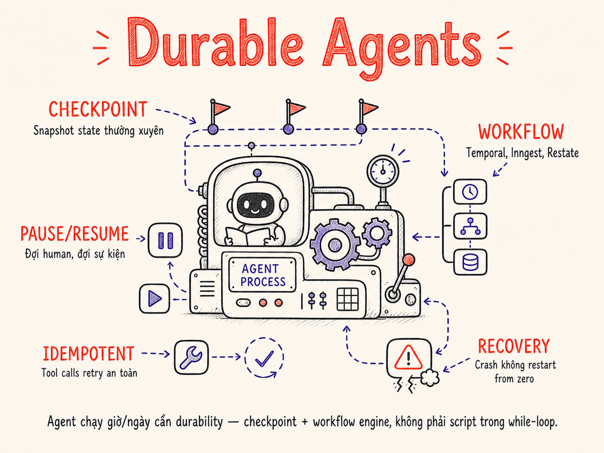

Long-running & Durable Agents
Agent chạy hàng giờ, hàng ngày không thể sống sót bằng một vòng lặp đơn giản. Durability — checkpoint, replay, pause/resume, và workflow engine — là sự khác biệt giữa prototype và hệ thống production thực sự đáng tin.

26.1 Tại sao cần durability — bài toán long-horizon
Hầu hết agent tutorials minh họa các task ngắn: tra cứu thông tin, viết một đoạn văn, gọi một vài API rồi kết thúc trong vài giây. Nhưng các tác vụ thực tế trong production ngày càng đòi hỏi nhiều hơn thế:
- Research agent: thu thập, đọc, tổng hợp 200+ papers trong 4–6 tiếng
- Ops agent: monitor hệ thống, detect anomaly, tự động patch, chạy suốt ngày đêm
- Data pipeline agent: xử lý terabyte data qua nhiều bước biến đổi, chạy hàng giờ
- Coding agent: implement feature lớn, viết test, refactor, review — cả ngày làm việc
- Crash giữa chừng → mất toàn bộ progress, phải bắt đầu lại từ đầu
- Timeout → cloud functions có limit 15 phút (Lambda), 60 phút (Cloud Run)
- Cost catastrophe → restart từ đầu = thanh toán lại toàn bộ token đã dùng
- Không thể pause → không có chỗ cho human review giữa chừng
Ba lý do cốt lõi khiến durability trở thành yêu cầu bắt buộc cho long-horizon agents:
- Long-horizon tasks (giờ đến ngày): vượt quá mọi timeout của serverless, HTTP request, hay process đơn lẻ. Chúng ta cần cơ chế suspend và resume trên nhiều process, nhiều máy chủ, qua nhiều giờ đồng hồ.
- Cost recovery: Một agent research chạy 3 tiếng bỗng bị crash ở bước thứ 847. Không có checkpoint, bạn phải trả lại toàn bộ 847 × (tool call + LLM reasoning) — có thể hàng chục đô. Với checkpoint, bạn chỉ cần resume từ bước 847.
- Reliability tổng thể: Mạng ngắt, instance bị kill, OOM, provider timeout — đây là các sự kiện thường xuyên không phải ngoại lệ khi chạy workload dài. Agent durable xử lý những sự cố này như một phần của thiết kế, không phải là bug cần fix.
Durable Agent là agent có khả năng: (1) lưu trữ state định kỳ (checkpoint), (2) tiếp tục từ checkpoint sau khi crash hoặc pause (resume), (3) đảm bảo mỗi action thực thi đúng một lần (exactly-once semantics hoặc at-least-once với idempotency).
26.2 Stateless vs Stateful agent runtime
| Đặc điểm | Stateless Runtime | Stateful / Durable Runtime |
|---|---|---|
| Lưu trữ state | Chỉ trong memory (process lifetime) | Checkpoint ra DB/storage định kỳ |
| Crash recovery | Mất toàn bộ, restart từ đầu | Resume từ checkpoint cuối |
| Task duration | Bị giới hạn bởi process timeout | Vô hạn (suspend/resume qua nhiều process) |
| Scalability | Vertical (to máy khỏe hơn) | Horizontal + async |
| Human-in-the-loop | Khó — agent phải đợi đồng bộ | Clean pause/resume với signal |
| Complexity | Thấp — script bình thường | Cao hơn — cần workflow engine |
| Phù hợp với | Task <60 giây, throwaway | Task >5 phút, mission-critical |
Ranh giới quan trọng: không phải mọi agent đều cần durability. Chatbot trả lời trong 10 giây không cần checkpoint. Nhưng khi task vượt quá vài phút, bắt đầu có real money trong cuộc chơi, hoặc có human review cần thiết — đó là lúc durability trở thành yêu cầu kỹ thuật, không còn là tùy chọn nữa.
26.3 Checkpointing — snapshot state, action log, replay vs resume
Checkpoint là snapshot đầy đủ của agent state tại một thời điểm, đủ để resume chính xác mà không cần re-execute các bước đã hoàn thành.
Ba thành phần của một checkpoint đầy đủ
- Conversation history (messages array)
- Kết quả của mọi tool call đã thực thi
- Biến trạng thái (plan, step index, loop counter)
- Metadata: cost_so_far, time_elapsed, step_count
- Ordered log mọi action đã xảy ra
- Input + output của mỗi tool call
- Timestamp, tool_call_id, status
- Dùng để audit trail, debug, và replay
Tần suất checkpoint — trade-off
| Strategy | Mô tả | Pro | Con |
|---|---|---|---|
| After every tool call | Checkpoint ngay sau khi tool call thành công | Ít mất nhất khi crash (chỉ mất 1 step) | I/O overhead mỗi step; chậm hơn |
| Every N steps | Checkpoint sau mỗi N tool calls | Cân bằng giữa overhead và safety | Có thể phải redo tối đa N steps khi crash |
| After key milestones | Checkpoint tại "phase boundaries" (plan done, data collected, ...) | Checkpoint có ý nghĩa; ít checkpoint hơn | Cần thiết kế boundary rõ ràng |
| Time-based | Checkpoint mỗi T phút dù đang ở bước nào | Đơn giản; không cần code logic đặc biệt | Có thể checkpoint giữa chừng một action |
Best practice năm 2026: Checkpoint sau mỗi tool call thành công. Tool calls thường là side-effecting (API calls, DB writes) — đây chính xác là thời điểm bạn muốn ghi nhận "action này đã xảy ra thật", bảo vệ khỏi double-execution.
Replay vs Resume — hai cách phục hồi
Load checkpoint state trực tiếp. Skip các steps đã hoàn thành. Tiếp tục chính xác từ bước tiếp theo. Không re-execute các tool calls cũ.
Yêu cầu: state snapshot đầy đủ. Nhanh, rẻ, safe.
Re-execute các bước cũ từ đầu nhưng dùng cached/recorded results thay vì gọi tool thật. Temporal, Inngest dùng cơ chế này. Deterministic nếu tool calls được record đầy đủ.
Yêu cầu: action log đầy đủ. Chậm hơn resume nhưng đảm bảo correctness.
26.4 Pause/Resume semantics
Không phải mọi thời điểm đều là "clean pause point". Khi thiết kế durable agent, bạn phải biết chính xác agent đang ở đâu trong execution và có thể dừng an toàn không.
Ba trạng thái pause khác nhau
Clean pause point — an toàn nhất
Agent vừa hoàn thành một tool call, đã checkpoint state, và chưa bắt đầu bước tiếp theo. Đây là thời điểm lý tưởng để pause: state nhất quán, không có side effect nào "nửa vời".
Cách implement: Sau mỗi tool call thành công, kiểm tra should_pause flag
(được set bởi human review, scheduled time, hoặc cost threshold). Nếu có, checkpoint và return.
async def run_step(state: AgentState) -> AgentState:
result = await execute_tool(state.next_tool_call)
state = apply_result(state, result)
await checkpoint(state) # persist to DB
if await should_pause(state): # check pause flag
raise CleanPauseException(state) # workflow engine catches this
return stateMid-tool call — tricky
Agent đang thực thi một tool call dài (ví dụ: crawl web, query database) và bị interrupt. Vấn đề: tool call có thể đã có side effects một phần (ví dụ: đã ghi 500/1000 records).
Best practice:
- Design tools để atomic hoặc idempotent
- Long-running tools nên tự checkpoint internally (ví dụ: cursor-based, page-by-page)
- Dùng transaction khi ghi dữ liệu — rollback nếu không commit
- Tránh để tool call quá dài (>60 giây) — break thành nhiều bước nhỏ
Mid-LLM call — khó xử lý nhất
LLM đang generate response (streaming) thì bị interrupt. Đây là trường hợp khó nhất vì bạn chưa có đủ output để biết model định làm gì tiếp.
Strategies năm 2026:
- Không interrupt LLM calls — treat mỗi LLM call là atomic; cho nó hoàn thành rồi checkpoint
- Streaming checkpoint: Nếu LLM call quá dài, stream và buffer partial output; khi resume có thể feed lại partial output như context. Phức tạp, không recommend cho hầu hết use cases.
- Timeout + retry: Set LLM call timeout (ví dụ: 120s); nếu timeout, retry từ checkpoint trước đó — LLM call sẽ produce output hơi khác nhưng semantically tương đương.
Khác với tool calls (có thể cache), LLM calls khi retry sẽ produce output khác (do temperature > 0). Đây là lý do nhiều durable agent frameworks treat LLM calls như "side effects cần record" — record output lần đầu và replay recorded output khi cần. Lưu ý: nên ghi cả model_id vào record vì provider cập nhật model weights thường xuyên, ảnh hưởng đến khả năng reproduce chính xác hành vi.
26.5 Workflow engines cho agents
Thay vì tự xây dựng toàn bộ cơ sở hạ tầng checkpoint/resume, năm 2026 chúng ta có nhiều workflow engines sẵn sàng cung cấp durability out-of-the-box.
| Engine | Latency overhead | Durability guarantee | Language SDKs | Pricing model |
|---|---|---|---|---|
| Temporal | ~10–50ms per activity | Exactly-once (event sourcing + replay) | Go, Java, Python, TypeScript, PHP, .NET, Ruby | Self-host miễn phí; Temporal Cloud ~$25/month + usage |
| Inngest | ~20–100ms per step (near-zero với Checkpointing mode) | At-least-once (với idempotency keys); Checkpointing mode hỗ trợ real-time workflows | TypeScript, Python, Go | Free tier; paid từ $75/month |
| Restate | <5ms per step (embedded) | Exactly-once (durable promises) | TypeScript, Java, Kotlin, Python, Go, Rust | Open source self-host; Restate Cloud GA (public, usage-based pricing) |
| Hatchet | ~15–80ms per step | At-least-once + idempotency | Python, TypeScript, Go | Open source; hosted tier $50+/month |
| AWS Step Functions | ~100–500ms per state | Exactly-once (managed service SLA) | Any (HTTP callbacks), CDK để define | $0.025 per 1000 state transitions |
| Trigger.dev | ~50–200ms per step | At-least-once với retries | TypeScript (primary), Python (v3) | Free tier; paid từ $10/month |
| Cloudflare Workflows | ~50–150ms per step (serverless) | At-least-once; auto-persist state sau mỗi step; waitForEvent API | TypeScript/JavaScript (Workers), Python (AI Gateway) | Free 1k/month; $0.01 per 1k workflow-steps sau đó; GA từ tháng 4/2025 |
| DBOS | ~1–10ms per step (database-backed) | Exactly-once qua Postgres transactions; DBOSAgent wrapper cho Pydantic AI | Python (primary), TypeScript | Open source (DBOS Transact); DBOS Cloud hosted tier |
TypeScript stack + cần managed service: Inngest hoặc Trigger.dev — developer experience tốt nhất, deploy nhanh.
Python heavy + enterprise scale: Temporal — battle-tested, tích hợp chính thức với OpenAI Agents SDK (public preview từ 9/2025).
Latency-sensitive (embedded): Restate Cloud (GA) — overhead thấp nhất, tích hợp tốt với Pydantic AI.
Đã dùng AWS: Step Functions — ít vendor mới, tích hợp native với Lambda/ECS.
Edge/serverless Workers: Cloudflare Workflows — GA từ 4/2025, tích hợp native với Cloudflare AI Gateway và Agents.
Database-backed + Postgres: DBOS Transact — exactly-once qua DB transactions, không cần external workflow server.
Self-host & open source: Temporal OSS hoặc Hatchet.
26.6 Pattern: "Agent as Workflow"
Ý tưởng cốt lõi: thay vì chạy agent loop như một process liên tục, map mỗi step của agent loop thành một activity/step trong workflow engine. Workflow engine quản lý durability; agent code chỉ lo logic.
Mapping: Agent concepts → Workflow concepts
| Agent concept | Workflow concept | Ý nghĩa |
|---|---|---|
| Agent loop iteration | Workflow execution | Toàn bộ agent run = một workflow instance |
| Tool call | Activity / Step | Mỗi tool call = một activity có retry, timeout riêng |
| LLM reasoning call | Durable activity với side-effect recording | Output LLM được record, replay khi cần |
| Checkpoint | Workflow state persistence | Automatic sau mỗi activity hoàn thành |
| Pause for human review | Signal / Condition wait | Workflow sleep cho đến khi nhận được signal |
| Loop tiếp hay dừng? | Conditional transition | Workflow branching dựa trên LLM decision |
Code example: Temporal Workflow (Python pseudo-code)
from temporalio import workflow, activity
from dataclasses import dataclass, field
import anthropic
# ── Activities: mỗi tool call là một activity durable ──
@activity.defn
async def call_llm_reasoning(messages: list, tools: list) -> dict:
"""LLM call là 1 activity — Temporal record output, replay khi crash."""
client = anthropic.Anthropic()
response = client.messages.create(
model="claude-opus-4-5",
max_tokens=4096,
messages=messages,
tools=tools
)
return {"content": response.content, "stop_reason": response.stop_reason}
@activity.defn
async def execute_tool_call(tool_name: str, tool_input: dict) -> dict:
"""Tool call là activity: có retry policy, timeout, idempotency key."""
# Tool registry dispatch
tool_fn = TOOL_REGISTRY[tool_name]
return await tool_fn(**tool_input)
# ── Workflow: agent loop được orchestrate bởi Temporal ──
@workflow.defn
class DurableAgentWorkflow:
def __init__(self):
self._approval = None # human-in-the-loop signal
self._should_pause = False
@workflow.signal
async def human_approve(self, decision: str):
"""Signal từ human reviewer — workflow tiếp tục sau khi nhận."""
self._approval = decision
@workflow.run
async def run(self, task: str, tools: list) -> str:
messages = [{"role": "user", "content": task}]
step = 0
while step < 50: # max 50 iterations guard
step += 1
# LLM reasoning — durable activity, output được Temporal record
llm_response = await workflow.execute_activity(
call_llm_reasoning,
args=[messages, tools],
start_to_close_timeout=timedelta(seconds=120),
retry_policy=RetryPolicy(maximum_attempts=3)
)
# Done?
if llm_response["stop_reason"] == "end_turn":
break
# Execute tool calls — parallel khi có nhiều tool calls
tool_calls = [b for b in llm_response["content"] if b["type"] == "tool_use"]
tool_results = await asyncio.gather(*[
workflow.execute_activity(
execute_tool_call,
args=[tc["name"], tc["input"]],
start_to_close_timeout=timedelta(seconds=60),
retry_policy=RetryPolicy(maximum_attempts=3)
)
for tc in tool_calls
])
# Sau mỗi activity set hoàn thành → Temporal tự checkpoint
# Check pause point — human review needed?
if self._requires_human_review(tool_results):
# Workflow sleep forever until human_approve signal
await workflow.wait_condition(lambda: self._approval is not None)
if self._approval == "reject":
return "Task cancelled by human reviewer"
self._approval = None # reset for next pause
messages = build_next_messages(messages, llm_response, tool_results)
return extract_final_answer(messages)Điểm mấu chốt: Temporal (và các workflow engines tương tự) tự động persist state sau mỗi activity. Nếu process chết giữa chừng, khi restart Temporal replay lại history bằng cách dùng recorded outputs — không gọi lại LLM hay tool thật. Agent code hoàn toàn không cần biết điều này đang xảy ra.
26.7 Idempotency cho retries
Trong durable agent, tool calls có thể được execute nhiều lần: lần retry sau timeout, lần replay trong Temporal, lần re-execute sau crash. Nếu tool call không idempotent, bạn sẽ có duplicate data, duplicate emails, duplicate payments.
Các mức độ idempotency
Naturally idempotent tools
Read-only tools luôn safe để retry. Writes có thể thiết kế idempotent:
# Idempotent: GET operations
def get_user_profile(user_id: str) -> dict: ... # always safe
def search_knowledge_base(query: str) -> list: ... # always safe
# Idempotent: upsert pattern (không tạo duplicate)
def set_user_preference(user_id: str, key: str, value: str) -> dict:
# "INSERT OR REPLACE" semantics — safe to call N times
db.upsert("user_prefs", {"user_id": user_id, "key": key, "value": value})
return {"status": "ok"}Idempotency key pattern
Gắn idempotency_key vào mọi tool call — thường là f"{workflow_id}:{step_id}:{tool_name}".
def send_email(to: str, subject: str, body: str, idempotency_key: str) -> dict:
# Check nếu đã gửi với key này rồi
if email_log.exists(idempotency_key):
return email_log.get(idempotency_key) # return cached result
result = smtp.send(to, subject, body)
email_log.store(idempotency_key, result) # persist result
return result
# Agent gọi với key deterministic từ workflow context
send_email(
to="user@example.com",
subject="Report ready",
body=report_text,
idempotency_key=f"workflow-{wf_id}:step-{step_n}:send_email"
)Deduplication layer (workflow-level)
Temporal và Inngest có built-in deduplication: nếu activity đã hoàn thành với cùng input trong cùng workflow instance, kết quả cũ được trả về mà không gọi function thật.
# Temporal tự handle deduplication cho activities
# Developer chỉ cần define activity + retry policy
result = await workflow.execute_activity(
send_notification,
args=[user_id, message],
# Temporal ensures: nếu activity đã run với args này
# trong workflow này, KHÔNG gọi lại — return cached result
start_to_close_timeout=timedelta(seconds=30)
)
# Inngest: step.run với idempotent key
result = await step.run("send-notification", lambda: send_notification(user_id, message))
# Inngest ensures step "send-notification" chỉ run 1 lần per function run
send_email(), charge_payment(), post_to_slack(),
create_github_issue() — tất cả đều không idempotent by default.
Gọi 2 lần = 2 emails, 2 charges, 2 posts. Luôn implement idempotency key hoặc check trước khi execute.
26.8 Crash recovery & failure semantics
Failure taxonomy cho agents
| Loại failure | Ví dụ | Recovery strategy |
|---|---|---|
| Transient | Network timeout, rate limit 429, provider blip | Retry với exponential backoff — workflow engine tự xử lý |
| Process crash | OOM kill, container eviction, deploy | Workflow engine resume từ last checkpoint |
| Tool failure | API trả 500, DB connection lost | Retry (idempotent tools) hoặc fallback tool |
| LLM failure | Context too long, malformed output, refusal | Truncate context, structured output enforcement, graceful degrade |
| Logical loop | Agent bị stuck, lặp lại cùng tool call | Max iterations guard, detect-repeat heuristic, alert + human review |
| Permanent | Tool bị xóa, credentials revoked | Mark failed, notify user, partial result delivery |
Nếu agent làm xong 90% task rồi fail ở bước cuối, hãy lưu và trả về partial result thay vì báo "failed". 90% work đã được làm — user nên có access tới đó. Design agent output để incremental delivery là có thể: viết mỗi section report ra file ngay khi xong thay vì chờ synthesize cuối.
26.9 Human-in-the-loop pause points
Durable agents mở ra một khả năng quan trọng: pause thực sự để đợi human input — không phải polling, không phải timeout, mà workflow suspend cho đến khi nhận được signal.
Khi nào cần human-in-the-loop
- Irreversible actions: send email, publish post, deploy production, charge payment — confirm trước khi execute
- Ambiguous intent: agent không chắc user muốn gì — hỏi thay vì đoán sai
- Cost gate: agent chuẩn bị gọi LLM call tốn >$X — xin phép trước
- Security-sensitive: truy cập sensitive data, thay đổi permissions — explicit approval
- Quality gate: draft đã xong — human review trước khi gửi cho client
# Inngest example: pause workflow wait for approval
async def research_and_publish_agent(step, event):
# Phase 1: collect + write (fully autonomous)
research = await step.run("collect-research", lambda: do_research(event.topic))
draft = await step.run("write-draft", lambda: write_article(research))
# ── PAUSE: wait for human review (days if needed) ──
approval_event = await step.waitForEvent(
"article/approved",
timeout="7d", # workflow sleeps for up to 7 days
match="data.article_id"
)
if approval_event is None:
return {"status": "expired", "draft": draft}
if approval_event.data["decision"] == "reject":
# Incorporate feedback and revise
feedback = approval_event.data["feedback"]
draft = await step.run("revise-draft", lambda: revise_article(draft, feedback))
# Phase 3: publish (after approval)
await step.run("publish", lambda: publish_to_cms(draft))
return {"status": "published"}
Trong ví dụ trên, workflow thực sự ngủ trên Inngest infrastructure — không chiếm tài nguyên,
không tốn tiền server, không cần polling. Khi reviewer gửi event article/approved,
workflow tự động thức dậy và tiếp tục từ đúng chỗ đó.
26.10 Cost recovery — không bao giờ restart từ zero
Chi phí LLM trong một long-horizon agent session có thể rất đáng kể. Một research agent xử lý 200 papers có thể tốn $10–30 trong LLM calls. Mỗi lần restart từ đầu = trả lại toàn bộ chi phí đó.
Cost recovery strategy
Đây là nguyên tắc số một. Mỗi lần một tool call (đặc biệt là LLM call) thành công, ghi ngay state ra persistent storage. Cost đã tiêu cho step đó không bao giờ bị lãng phí.
Dùng prompt caching (Anthropic) hoặc semantic cache. Khi resume, mọi LLM call trong action log được trả về từ cache — không gọi lại model, không tốn token.
Track cumulative cost. Checkpoint khi cost vượt threshold (ví dụ: mỗi $0.50). Nếu agent sẽ vượt budget, pause và notify trước khi tiếp tục.
Lưu partial results ra storage ngay khi có (mỗi section report, mỗi analyzed document). Crash không làm mất output đã tạo — user nhận được phần đã hoàn thành.
# Cost-aware agent loop với checkpoint-per-step
class CostAwareAgentState:
total_cost_usd: float = 0.0
cost_limit_usd: float = 10.0
step_count: int = 0
checkpoints: list[Checkpoint] = field(default_factory=list)
async def execute_step_with_cost_guard(state: CostAwareAgentState, step_fn) -> CostAwareAgentState:
if state.total_cost_usd >= state.cost_limit_usd:
raise CostLimitExceeded(f"Budget ${state.cost_limit_usd} reached")
result, step_cost = await step_fn()
state.total_cost_usd += step_cost
state.step_count += 1
# ALWAYS checkpoint after successful step
checkpoint = Checkpoint(
step=state.step_count,
state_snapshot=serialize(state),
timestamp=now(),
cost_so_far=state.total_cost_usd
)
await checkpoint_store.save(checkpoint) # durable write
return state26.11 Long context vs externalized state
Khi agent chạy lâu, context window bắt đầu phình to. Câu hỏi quan trọng: cái gì nên ở trong context, cái gì nên ra ngoài DB?
| Loại thông tin | Giữ trong context | Externalize ra DB/storage |
|---|---|---|
| Recent tool results | Có — model cần reference ngay | Archive sau N steps |
| Raw source documents | Chỉ relevant excerpts | Full content → vector store, retrieve on demand |
| Accumulated research notes | Condensed summary | Full notes → structured DB với search index |
| Completed sub-tasks | Summary/status only | Full output → file storage |
| Current plan & next steps | Có — active reasoning cần này | N/A |
| Historical tool call logs | Không — quá dài | Action log DB |
| Large data artifacts | Không bao giờ | Blob storage; pass reference/URL vào context |
Rule of thumb: context window là working memory — chỉ giữ thứ bạn đang actively sử dụng trong bước suy luận tiếp theo. Mọi thứ khác externalize. Khi cần lại, retrieve (semantic search, key lookup, hoặc structured query) và đưa vào context on-demand.
Định kỳ (ví dụ: mỗi 10 steps), dùng một LLM call riêng để summarize và compress phần cũ của context. Giữ lại: (1) original task, (2) current plan, (3) key decisions made, (4) last 3–5 tool call results. Discard: raw content đã được process, redundant observations. Cách này giúp context window không phình vô hạn trong suốt multi-hour session.
26.12 Multi-day agent examples
Research Agent — chạy 6–12 tiếng
Task: "Viết báo cáo toàn diện về state of LLM evals năm 2026 — survey 150+ papers, benchmark frameworks, và industry practices."
Durability concerns đặc thù:
- Web crawling: Nhiều URL, rate limits, CAPTCHAs. Checkpoint URL đã crawl để không crawl lại khi resume
- LLM summarization per paper: 150+ LLM calls — checkpoint mỗi call để không tốn lại cost
- Thematic clustering: Expensive reasoning step — checkpoint result ngay sau khi xong
- Human review: Pause trước khi write final section để human validate outline
State schema example:
AgentState = {
"phase": "crawl" | "summarize" | "cluster" | "write",
"papers_found": ["url1", "url2", ...], # discovery done
"papers_summarized": {"url1": "summary..."}, # no re-crawl
"clusters": {"theme1": ["url1"...]}, # no re-cluster
"sections_written": {"intro": "text..."}, # partial report
"cost_usd": 4.52,
"start_time": "2026-05-22T08:00Z"
}Ops Agent — chạy liên tục theo schedule
Task: "Monitor production infrastructure, detect anomalies, create tickets, và tự động patch các issues low-risk."
Durability concerns đặc thù:
- Stateful monitoring: Nhớ baseline metrics giữa các runs; phát hiện drift dài hạn
- Scheduled resume: Chạy mỗi 5 phút; mỗi run là một workflow instance riêng
- Irreversible actions: Restart service, scale down pods — LUÔN cần human approval hoặc dry-run confirmation
- Action deduplication: Đừng tạo 2 tickets cho cùng một issue khi monitor chạy overlap
Pattern: Cron → trigger workflow → execute → checkpoint findings → human approval cho risky actions → execute fix → checkpoint result → wait next cron.
Monitoring Agent — event-driven, continuous
Task: "Theo dõi customer support inbox, phân loại, route, draft responses cho >80% confident cases, escalate còn lại."
Durability concerns đặc thù:
- Exactly-once processing: Email không được process 2 lần — idempotency key = email message ID
- Long-tail conversations: Thread customer kéo dài nhiều ngày — state per conversation_id được persist
- Human escalation wait: Khi agent escalate, workflow pause; resume khi human adds note
- SLA awareness: Track thời gian ticket open; trigger escalation nếu cận SLA mà chưa resolve
26.13 "Cách cũ" vs "Cách hiện tại"
# Script đơn giản, không có durability
import anthropic
def run_agent(task: str):
messages = [{"role": "user", "content": task}]
while True:
# Crash ở đây = mất toàn bộ
response = client.messages.create(...)
if response.stop_reason == "end_turn":
break
# Tool calls thực thi, không có idempotency
# Crash ở giữa = partial execution, no recovery
results = execute_tools(response.tool_calls)
messages = append_results(messages, results)
return extract_answer(messages)
# Gọi thẳng, không durability gì cả
result = run_agent("Research LLM evals for 6 hours")
# Nếu crash sau 5h → phải chạy lại từ đầu
# Chi phí: $20 gone. Total cost: $40+# Durable workflow với Inngest
async def research_agent(step, event):
task = event.data["task"]
messages = [{"role": "user", "content": task}]
step_n = 0
while step_n < 200:
# LLM call = durable step (result cached)
response = await step.run(
f"llm-step-{step_n}",
lambda: call_llm(messages)
)
if response["stop_reason"] == "end_turn":
break
# Tool calls = durable steps, idempotent
results = await step.run(
f"tools-step-{step_n}",
lambda: exec_tools_idempotent(
response["tool_calls"],
idempotency_key=f"wf-{step_n}"
)
)
# Inngest auto-checkpoints after each step.run()
messages = append_results(messages, results)
step_n += 1
return extract_answer(messages)
# Crash sau 5h → resume từ last step, cost: $0 extraBảng so sánh tổng hợp
| Tiêu chí | Script trong vòng lặp | Durable Workflow |
|---|---|---|
| Crash recovery | Không — restart từ đầu | Resume từ last checkpoint |
| Cost khi crash | Mất 100% chi phí đã bỏ ra | Chỉ tốn chi phí từ last checkpoint |
| Max duration | Bị giới hạn bởi process/container timeout | Không giới hạn (days/weeks) |
| Human-in-the-loop | Phải polling hoặc blocking wait | True pause/signal semantics |
| Idempotency | Không có — retry = duplicate | Built-in qua step IDs |
| Observability | Tự log hoặc không có gì | Full execution history, step-by-step visibility |
| Scaling | Vertical (máy khỏe hơn) | Horizontal (nhiều workers) |
| Complexity | Thấp — dễ viết | Cao hơn — cần setup workflow engine |
| Khi nào dùng | Task <5 phút, throwaway demo | Mission-critical, >5 phút, real money |
Tóm tắt
- Durability không phải luxury — đây là yêu cầu production cho bất kỳ agent nào chạy hơn vài phút. Long-horizon tasks (giờ/ngày), cost recovery, và human-in-the-loop đều đòi hỏi cơ sở hạ tầng checkpoint/resume.
- Checkpoint sau mỗi tool call thành công. Đây là nguyên tắc số một. Không có lý do gì để "tiết kiệm" I/O checkpoint khi một crash có thể cost nhiều hơn hàng trăm lần tổng overhead checkpoint.
- Workflow engines (Temporal, Inngest, Restate, Cloudflare Workflows, DBOS, Step Functions, Trigger.dev) cung cấp durability out-of-the-box. Đừng tự xây toàn bộ — dùng những gì đã có.
- Pattern "Agent as Workflow": Map tool calls → activities, LLM calls → durable activities, pause points → signals/waits. Workflow engine quản lý durability; agent code chỉ lo business logic.
- Idempotency không phải tùy chọn. Mọi tool call có side effects phải có idempotency key. Retry không được tạo duplicate emails, charges, hoặc DB records.
- Pause/resume semantics: Chỉ pause tại clean pause points (sau tool call hoàn thành). Mid-LLM và mid-tool call interruption phức tạp hơn nhiều và thường nên tránh.
- Human-in-the-loop trong durable agent là true pause — workflow sleep thực sự, không tốn resource, không polling, wake up khi signal đến dù là ngày hôm sau.
- Externalize state ra DB: Context window là working memory — chỉ giữ thông tin đang active cần. Raw source material, history logs, artifacts lớn → persist ra ngoài, retrieve khi cần.
- "Cách cũ" (script trong loop) chỉ phù hợp cho demo và throwaway tasks. Production agents với real money và real time cần durable workflow architecture.
§27 — Agent Evaluation: Sau khi agent có thể chạy lâu dài và đáng tin, câu hỏi tiếp theo là: làm sao biết nó đang hoạt động đúng? Evaluation cho durable agents phức tạp hơn nhiều so với chatbot — trajectory scoring, partial credit, cost-efficiency metrics, và human preference calibration.